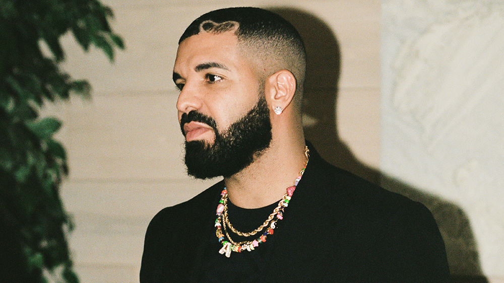
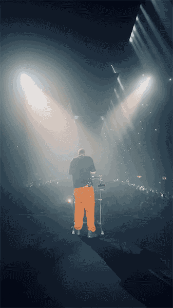
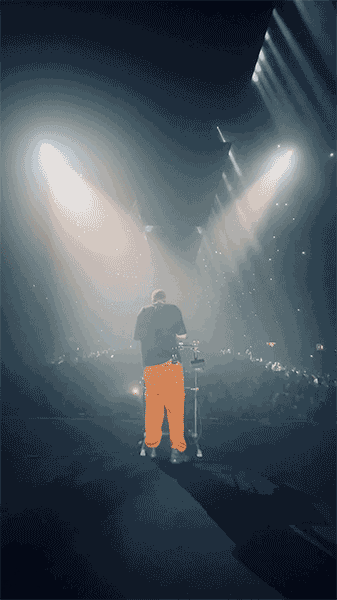
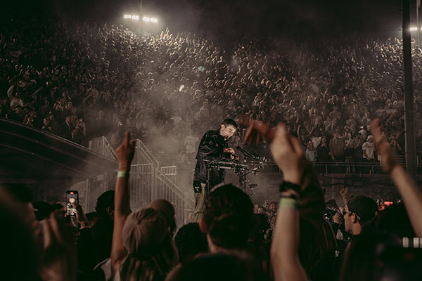
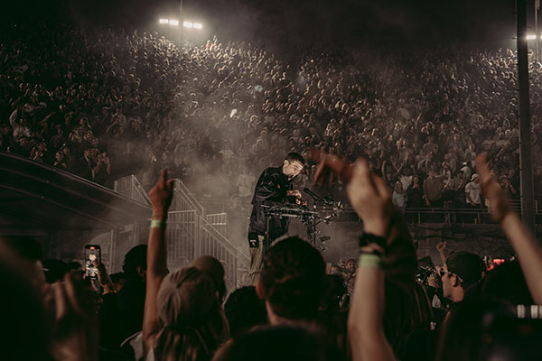

Who is Drake?

Drake.. He is a Canadian rapper, singer and songwriter who is known almost everywhere in hte world He uses personal stories often in his music like relationships, his fame and personal growth. Drake has become one of the most influential figures in the hip-hop and pop music.


 

 
